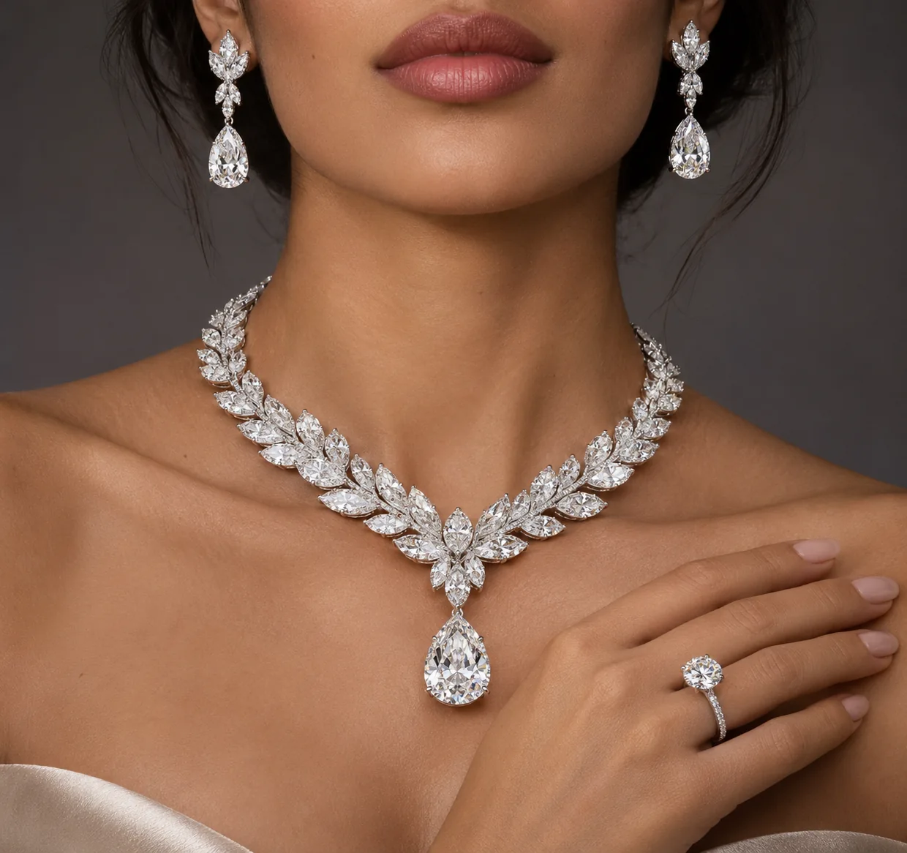

Project narratives currently available in English.
AI VISUAL ARTIST
& VIDEO CREATOR.
AI-generated fashion, beauty and product imagery — with developing cinematic AI video production and a software engineering mindset.
One direction.
Many visual formats.
I create AI-assisted campaign visuals and short-form video content for fashion, beauty and product brands. My priorities: brand coherence, intentional lighting, plausible materials, character consistency and clean visual storytelling.
Creative portfolio in active development
These are independent, AI-generated concept studies rather than commissioned client campaigns. I am actively refining the process and expanding the work with motion and production series.
Campaign studies.




Product & lifestyle
Campaign frames, studio-style visuals, lifestyle environments, detail shots, format variations.
Fashion & beauty
Editorial moodboards, consistent style explorations, beauty storytelling, art-directed visual sets.
Short-form AI video
Shot boards, image-to-video sequences, cinematic social concepts and content variants. Final feasibility is confirmed in a pilot.
Brief & visual world
Brand, audience, references, intended platforms, deliverable formats and constraints.
Keyframes and look-dev
Establish lighting, styling, framing, subject consistency and approved anchor frames.
Final assets & QA
Iterate, assemble formats, review artifacts, confirm final delivery and agreed revision rounds.
My current toolkit includes Midjourney, Nano Banana, Kling, Veo and Higgsfield. The software is selected according to each project; a named tool does not guarantee exact packaging or perfect character identity.
Have a campaign in mind?
Send the product, your references, usage channels and desired deliverables. I will propose a practical pilot and production scope.